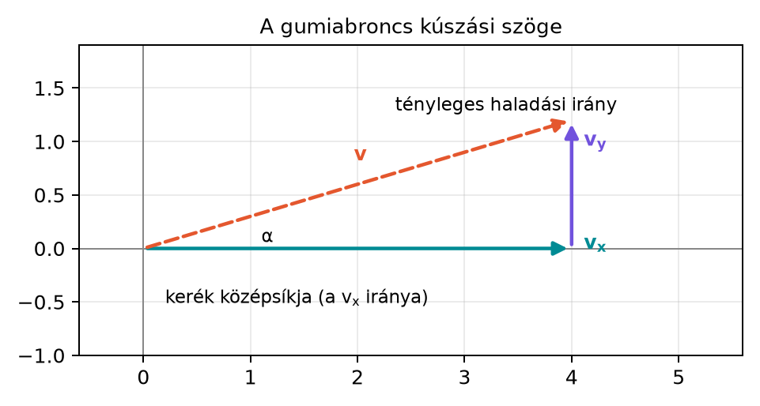

Egy autószerelő gyakran találkozik olyan panasszal, hogy a jármű húz valamelyik oldalra, a kormány ferdén áll egyenes menetben, vagy az első gumiabroncsok belső vagy külső éle egyenetlenül kopik. A tulajdonos általában a gumiabroncsot hibáztatja, pedig a panaszok többsége a kormánygeometria és a kerékbeállítás hibájára vezethető vissza. Ha a szerelő ilyenkor csak kicseréli az abroncsot anélkül, hogy megmérné a kerékdőlést, az utánfutást vagy a kerékösszetartást, a hiba rövid időn belül újra megjelenik, és a jármű vezethetősége is romlik. A kormánygeometria pontos ismerete ahhoz is kell, hogy a kormánymű szerelése után vagy futóműalkatrész cseréjekor a beállítást szakszerűen elvégezzük, és ne rontsuk el a jármű önbeálló tulajdonságait.
Amikor egy gumiabroncs kanyarban oldalirányú erőt ad át, a gumi futófelülete a deformáció miatt nem pontosan a kerék középsíkjának irányában halad: a kerék középsíkja és a tényleges haladási irány egy kis szöget zár be. Ezt a szöget kúszási szögnek nevezzük, és a gumiból származó oldalvezetési erő éppen e szög következménye.

Az ábrán a vízszintes vektor a kerék középsíkjával párhuzamos gördülési sebesség, a függőleges az abroncs oldalirányú csúszásából adódó sebességösszetevő, a szaggatott vonallal rajzolt pedig a kettő eredője, vagyis a tényleges haladási irány. A kerék középsíkja és a eredő közötti szög a kúszási szög. A kúszási szög tehát nem egyszerűen „csúszást” jelent, hanem a gumiabroncs rugalmas deformációjának mérőszáma.
Definíció. A kormánygeometria a kormányzott kerekek és a kormányberendezés azon geometriai jellemzőinek összessége, amelyek meghatározzák a kerekek elmozdulását kormányzáskor, a kerékdőlést, a csapterpesztést, az utánfutást, a legördülési sugarat és a kerékösszetartást.
Definíció. A kúszási szög az a szög, amely a kerék középsíkja és a gumiabroncs tényleges haladási iránya között jön létre oldalirányú erő hatására. Jele , mértékegysége fok vagy radián.
Összefüggés. A kúszási szög közelítőleg a kerék
középsíkra merőleges oldalirányú sebesség és a haladási sebesség
arányából számítható:
Kis
esetén
(radiánban).
Definíció. A kerékdőlés (camber, műhelyi szóhasználatban „dőlés”) a kerék középsíkja és a függőleges sík közötti szög, elölnézetben. Jele . Ha a kerék felső része kifelé dől, pozitív, ha befelé, negatív kerékdőlésről beszélünk.
Definíció. A csapterpesztés (steering axis inclination, SAI) a kormányzási tengely elölnézeti, befelé irányuló dőlése a függőlegeshez képest. Jele . A kormányzási tengely a felső és alsó csuklóponton átmenő egyenes, amely körül a kerék kormányzáskor elfordul.
Definíció. Az utánfutás (caster) a kormányzási tengely hátrafelé irányuló dőlése oldalnézetben, a függőlegeshez képest. Jele . Ha a tengely felső pontja hátrafelé dől, az utánfutás pozitív; ha előre, negatív.
Definíció. A legördülési sugár (scrub radius) a kerék középsíkja és a kormányzási tengely útfelületi metszéspontja közötti oldalirányú távolság. Jele . Ha a metszéspont a kerékfelfekvés középpontjától befelé (a jármű középvonala felé) esik, a legördülési sugár pozitív, ha kifelé, negatív (ellenőrizendő: a használt szabvány előjelkonvenciója).
Definíció. A kerékösszetartás (toe-in) a kormányzott kerekek hossztengelyeinek egymáshoz viszonyított helyzete. Pozitív összetartás, ha a kerekek elülső pontjai közelebb vannak egymáshoz, mint a hátsó pontjaik; ellenkező esetben széttartásról (toe-out) beszélünk. Jele .
Az ábrán a szögek nagyítva láthatók. Elölnézetben a negatív kerékdőlésű kerék teteje befelé dől, a kormányzási tengely (szaggatott) teteje szintén befelé dől (csapterpesztés); a tengely útfelületi döféspontja (▫) és a felfekvés közepe (●) közötti távolság a legördülési sugár. Oldalnézetben a pozitív utánfutású tengely döféspontja a felfekvési pont előtt van. Felülnézetben összetartásnál az elülső távolság (A) kisebb a hátsónál (B). Az Ackermann-vázlaton a két kormányzott kerék tengelyvonala a hátsó tengely vonalán lévő közös fordulási középpontban metszi egymást. A HTML-kiadás kalkulátora a szögekből kiszámolja a legördülési sugarat és előjelét, az utánfutási utat, az összetartást milliméterben () és az ideális külső kerékszöget.
A kormányzás feladata, hogy a vezető elfordítsa a kormányzott kerekeket, és így a jármű pályáját megváltoztassa. A járművek túlnyomó többségénél az első kerekeket kormányozzuk. A kerék a tengelycsonk (steering knuckle) csapágyaiban fordul el; a tengelycsonk maga a felső és alsó gömbcsuklón vagy a rugóstag felső csapágyán és az alsó gömbcsuklón keresztül csatlakozik a kerékfelfüggesztő elemhez. Ezt a két csuklópontot összekötő egyenes a kormányzási tengely; ez általában nem esik egybe sem a kerék középsíkjával, sem a függőlegessel. A kormánytrapéz a bal és jobb oldali tengelycsonk karját, a kormányösszekötő rudat és a kormányművet köti össze, és a két kerék eltérő szögű elfordítását hozza létre.
Ackermann-elv. Kanyarban a belső kerék kisebb sugarú
köríven gurul, mint a külső, ezért a belső kereket nagyobb szögben kell
elfordítani. Az ideális eset az, ha a két kormányzott kerék tengelye és
a hátsó tengely egy közös pillanatnyi fordulási középpontra mutat. A
kormánytrapéz ezt a feltételt közelíti. A fordulási szögkülönbségre
érvényes közelítő összefüggés:
ahol
a belső,
a külső kerék kormányzási szöge,
a kormányzási tengelyek oldaltávolsága,
pedig a tengelytáv. A kormánytrapéz geometriája a gyakorlatban úgy lett
kialakítva, hogy a kis és közepes kormányzási szögeknél jól közelítse
ezt az összefüggést.
Kerékdőlés. A kerékdőlés hatása kettős. Kanyarban a karosszéria oldalirányban megdől, ami a külső kerék dőlésszögét pozitív irányba változtatná; ezért a járműveknél gyakran kis negatív kerékdőlést alkalmaznak, hogy kanyarban a külső kerék közel függőlegesen álljon, és a gumiabroncs teljes felülete érintkezzen az úttal. Ugyanakkor a kerékdőlés a gumiabroncs belső vagy külső élén fokozott kopást okoz, ha az érték túl nagy, vagy ha a két kerék között nagy a különbség.
Csapterpesztés. A kormányzási tengely befelé dőlése a kerék elfordításakor emeli a jármű elejét, mert a kerékpánt középpontja a kormányzási tengely körül kis íven mozog. Ez az emelés a jármű súlyerejének visszatérítő nyomatékát hozza létre, ezért a kormány a kanyarból elengedve magától visszaáll egyenesbe. A csapterpesztés egyúttal csökkenti a pozitív legördülési sugarat, ami a fékezési és hajtási erők kormányra gyakorolt hatását mérsékli.
Utánfutás. A pozitív utánfutás a kormányzási tengely útfelületi metszéspontját a kerék felfekvési pontja elé helyezi. Ez az oldalerővel arányos önbeálló nyomatékot hoz létre, és javítja az egyenesfutást. Ha az utánfutás túl kicsi, a kormány „súlytalan”, és a jármű iránytartása romlik; ha túl nagy, a kormányzás nehézzé válik, és a kerék felfekvési pontján nagyobb dinamikus erők ébredhetnek. A jármű a pozitívabb dőlésű és a kisebb utánfutású kerék oldala felé húz (ellenőrizendő).
Legördülési sugár. A legördülési sugár a fékezési, hajtási és útsebesség-különbségből származó erők kormányrudazatra gyakorolt nyomatékát határozza meg. A nullához közeli legördülési sugár kevésbé érzékeny a féloldalas fékerő-különbségre; a negatív legördülési sugár fékezéskor befelé fordítja a kormányt, ami a járművet egyenesben tartja. A legördülési sugár a kerékdőlés, a csapterpesztés és a felnieltolás együttes eredménye.
Kerékösszetartás. A pozitív összetartás kompenzálja a gumiabroncs és a kormányrudazat rugalmas deformációját, ezért egyenes haladáskor a kerekek ténylegesen párhuzamosan, közelítőleg nulla kúszási szöggel gurulnak. A széttartás a járművet idegesen irányíthatóvá teszi, és a belső gumiéleken fűrészfogas kopást okoz. A pontos értéket a gyártó a kerékbeállítási adatlapon adja meg; a mérőszámot fokban vagy a kerékpánt peremén mért milliméterben szokták megadni.
Kúszási szög és alul-/túlkormányzottság. Kanyarban a gumiabroncsok oldalirányú erőt csak kúszási szög kialakulásával tudnak átvinni. Ha az első kerekek átlagos kúszási szöge nagyobb, mint a hátsóké, a jármű eleje jobban csúszik kifelé, mint a far: ez az alulkormányzottság (understeer). Ha a hátsó kúszási szög a nagyobb, a jármű far a kanyar külső oldala felé tör ki: ez a túlkormányzottság (oversteer). A kúszási szögek viszonyát a futómű geometriája, a gumiabroncs merevsége, a terheléseloszlás és a hajtás is befolyásolja. A menetstabilizáló rendszerek éppen ezt a viszonyt figyelik és korrigálják, ahogyan a(z) Ívmenet, tapadás, kicsúszási és borulási határsebesség alfejezetben láttuk.
Számítás. Az elsőkerék-összetartást gyakran
szögpercben adják meg. Számítsuk át az egy kerékre vonatkozó
értéket milliméterre, ha a kerékpánt mérőperemének átmérője
.
1. A szöget fokba váltjuk:
.
2. Kis szög esetén a lineáris elmozdulás:
.
3. Behelyettesítés:
.
4. Szimmetrikus beállításnál a teljes, bal és jobb kerékre összeadott
érték megközelítőleg
.
5. Ellenőrzés: a kapott érték a tipikus személyautó-összetartások
tartományába esik (ellenőrizendő: gyártói adat).
Számítás. A futóműbemérő műhelyben
teljes összetartást mutat két kerékre, a kerékpánt átmérője
.
Mekkora ez fokban és szögpercben?
1. A teljes lineáris értékből az egy kerékre jutó érték:
.
2. A szög:
.
3. Ebből
.
4. Szögpercben:
.
5. Ellenőrzés: az eredmény nagyságrendje megfelel a szokásos beállítási
tartománynak, de a pontos előírt értéket a gyártói adat határozza
meg.
Előírás. A kerékbeállítási szögeket mindig a gyártó javítási utasítása szerint, a megadott tűréssel és mérési feltételekkel (üres tömeg, előírt gumiabroncsnyomás, üzemanyagszint, kormány középállás) kell beállítani. Az itt megadott számértékek tanulási példák (ellenőrizendő: az adott jármű gyártói beállítási adata és a vonatkozó műszaki előírás). A futóműbeállítás megkezdése előtt a kormányrudazatot, a gömbcsuklókat, a lengőkar-szilenteket és a kormánymű holtjátékát ellenőrizni kell; kopott alkatrészekkel a beállítás nem végezhető el.
A kerékbeállítás ellenőrzésére futóműbemérő állványt használnak. A korszerű berendezés háromdimenziós kamerás vagy CCD-érzékelős célzótárcsákkal méri a kerékdőlést, az utánfutást, a csapterpesztést, a kormányzási szögkülönbséget és az összetartást. A mérés előtt a járművet sík felületen kell elhelyezni, a gumiabroncsok nyomását a gyártói értékre kell állítani, és a járművet a gyártó által előírt terhelési állapotba kell hozni. A kormányt középállásba kell fordítani, majd a mérőrendszer kalibrálása után a kerék elfordításával a csapterpesztési tengely geometriáját is meghatározza.
Ellenőrzőlista egy futóműbemérés előtt:
Egy ügyfél hároméves alsó-középkategóriás személygépkocsival érkezik, mert a jármű egyenes haladásnál jobbra húz, és a jobb első abroncs belső éle erősen kopott. A kormány egyenes állásban szinte vízszintes, de az autó folyamatosan jobbra tart. A szervizben először a gumiabroncsokat ellenőrzik, majd futóműbemérést végeznek. A mérési jegyzőkönyv szerint a bal első kerék dőlése , a jobb első kerék dőlése (a gyártói tűrés például – ellenőrizendő); az utánfutás a bal oldalon , a jobb oldalon . A szakember megállapítja, hogy a jobbra húzást főként az utánfutás-különbség okozza (a jobb oldal 1,5°-kal kisebb utánfutású), a jobb kerék túl negatív dőlése pedig a belső élkopás oka (a dőléskülönbség önmagában ellenkező irányba, balra hatna). A futóművön az állító excentercsavarokkal a dőlést és az utánfutást beállítják, ha a konstrukció lehetővé teszi. Amennyiben az értékek nem állíthatók, a kerékfelfüggesztő elem (például egy hajlott lengőkar vagy ütközés miatt deformálódott rugóstag) cseréje szükséges. A javítás után ismételt bemérés, próbaút és a gumikopás későbbi ellenőrzése következik.
A tanuló számára itt a legfontosabb tanulság az, hogy a húzás nem önmagában gumiabroncs-probléma, hanem a kerékbeállítási jellemzők oldalankénti különbsége.
Hibás átszámítás a milliméterben megadott összetartásnál. A tanuló a kerékpánt átmérő helyett a gumiabroncs külső átmérőjét használja, vagy elfelejti, hogy a lineáris érték a mérőperem átmérőjétől függ. Helyes: a mérési pont átmérőjét kell használni, és a szöget radiánba vagy fokba pontosan átváltani.
A kormány ferde állása miatt a futóműbemérést nem központi helyzetben végzik. Ha a kormány nem pontos középállásban áll a méréskor, a mért összetartás és a kormányzási szögkülönbség hamis lesz. Helyes: a kormányt a gyártó által megadott helyzetbe kell állítani.
A hibás beállítást csak a kormányösszekötő rúd egyik oldalán korrigálják. Ez a kormány ferde állásához és aszimmetrikus kormányzási szögekhez vezet. Helyes: a beállítást a gyártói utasítás szerint, szimmetrikusan vagy a kormány középállását megtartva kell végezni.
A kerékdőlést úgy magyarázzák, mint a kerék függőlegestől való eltérését, de nem veszik figyelembe a csapterpesztést. A kettőt elölnézetben együtt, de külön kell értelmezni; a kerékdőlés a kerék középsíkjára, a csapterpesztés a kormányzási tengelyre vonatkozik.
A beállítási jellemzőket szigetelten szemlélik. Például a kerékösszetartást beállítják anélkül, hogy a kerékdőlést vagy az utánfutást ellenőrizték volna, holott azok hibája ugyanúgy húzást és gumiabroncskopást okoz.
1. feladat (A) Definiálja a kerékdőlést, a csapterpesztést és az utánfutást saját szavaival, és adja meg, melyik síkban értelmezzük őket.
2. feladat (A) Egy kerék összetartási szöge egy elsőkerékre vonatkoztatva , a mérőperem átmérője . Számítsa ki az egy kerékre jutó lineáris összetartást milliméterben.
3. feladat (B) A futóműbemérő teljes összetartást mutat két kerékre, a mérőperem átmérője . Számítsa ki az egy kerékre jutó összetartási szöget fokban és szögpercben.
4. feladat (B) Rajzolja le vagy írja le a kormánytrapéz elvi vázlatát, és magyarázza el, miért fordul a belső kerék kanyarban nagyobb szögben, mint a külső. Melyik geometriai elv írja le ezt?
5. feladat (C) Egy személygépkocsi kanyarban alulkormányzottan viselkedik. Az első kerekek átlagos kúszási szöge , a hátsóké . Számítsa ki a kúszási szögek különbségét, és magyarázza el, milyen járműreakcióra számíthat a vezető.
6. feladat (D) Ügyfél panasza: az autó balra húz, a bal első gumi külső éle erősen kopik. A mérési adatok: bal első kerékdőlés (gyártói tűrés – ellenőrizendő), jobb első kerékdőlés , utánfutás mindkét oldalon . Az összetartás mindkét keréken. Milyen hibát valószínűsíthet, és milyen javítást javasol?
Önellenőrzés – válaszok
1. feladat megoldása
- Kerékdőlés: a kerék középsíkja és a függőleges sík közötti szög
elölnézetben.
- Csapterpesztés: a kormányzási tengely elölnézeti, befelé dőlése a
függőlegeshez képest.
- Utánfutás: a kormányzási tengely oldalnézeti, hátrafelé dőlése a
függőlegeshez képest.
2. feladat megoldása
Adott:
,
.
Fok:
,
tehát
.
Képlet:
.
Számítás:
,
így
.
Válasz: körülbelül
egy kerékre, szimmetrikusan a teljes összetartás kb.
.
3. feladat megoldása
Adott: teljes
,
.
Egy kerékre:
.
.
.
Szögperc:
.
Válasz: az egy kerékre vonatkozó szög körülbelül
.
4. feladat megoldása
A kormánytrapéz vázlata két lengőkarral (a tengelycsonk kormánykarjai)
és a közös nyomtávrúddal. A tengelycsonk karok a jármű középvonala felé
mutatnak, ezért a nyomtávrúd oldalirányú elmozdulásakor a belső kerék
karja nagyobb szögben fordul, mint a külsőé. Ezt az
Ackermann-elv írja le: a két kormányzott kerék és a
hátsó tengely egy közös pillanatnyi középpontra mutat, mert a kerekek
csúszás nélkül különböző sugarú köríveken gurulnak.
5. feladat megoldása
A kúszási szögek különbsége:
.
Ez a vezető számára azt jelenti, hogy a kanyar felé kell növelnie a
kormányszöget, mert a jármű eleje kifelé tolódik; az autó „nem veszi be
a kanyart”. A jelenség az alulkormányzottság.
6. feladat megoldása
A bal első kerékdőlés
,
ami a gyártói tűrésből kifelé lóg, ezért a bal első abroncs külső éle
erősen kopik, és a jármű balra húz. A jobb oldali érték közel
középértéken van. Az utánfutás szimmetrikus. A húzás és a kopás oka a
bal oldali pozitív kerékdőlés. A javítás: a bal első kerék dőlését a
gyártói tűrésre kell állítani, ha az adott futómű rendelkezik
dőlésállítással; ha nem, a felfüggesztő alkatrész (például a rugóstag, a
csapágyház vagy a bekötési pont) sérülésére kell gyanakodni, és az
alkatrészt ki kell cserélni. Beállítás után futóműbemérés és próbaút
szükséges.
A kormánygeometria a kormányzott kerekek elfordulási és beállítási jellemzőit foglalja rendszerbe. A kerékdőlés a kerék középsíkjának függőlegestől való dőlése; a csapterpesztés a kormányzási tengely elölnézeti, az utánfutás pedig az oldalnézeti dőlése. A legördülési sugár a kormányzási tengely és a kerék középsíkja útfelületi metszéspontja közötti távolság. A kerékösszetartás a kormányzott kerekek párhuzamossági hibáját adja meg; milliméterben mérve az érték függ a mérőperem átmérőjétől, átszámítása . A tengelycsonk-kormányzás és a kormánytrapéz az Ackermann-elv szerint a belső kereket nagyobb szögben mozdítja el, mint a külsőt. A gumiabroncs oldalvezetését a kúszási szög jellemzi; az első és hátsó kúszási szögek viszonya adja az alul- vagy túlkormányzottságot. A hibás beállítás félrehúzást, rendellenes gumiabroncskopást és rossz kormány-visszatérést okoz. Továbbvitt eredmény. A kormányzási szögkülönbség, a kerékbeállítási jellemzők és a kormánytrapéz geometriája elengedhetetlen a Kormányművek és kormányrudazat alfejezetben a kormányrudazat mozgásának és a kormánymű csatlakoztatásának, valamint a Futóműbemérés alfejezetben a mérési eljárás és a beállítási értékek értelmezéséhez.
A kormánygeometria és a kerékbeállítási jellemzők leírása a járműmechanika stabil műszaki alapjain nyugszik. A megadott beállítási értékek, tűrések és átszámítási példák tanulási példák. A gyártói beállítási adatokat, a mérési feltételeket és az esetleges hatósági követelményeket az adott jármű javítási utasításából és a hatályos nemzeti/uniós előírásokból kell ellenőrizni. A kormányzási szögkülönbségre vonatkozó összefüggés a kormánytrapéz idealizált geometriájából származik; a konkrét járműveknél a gyártói konstrukció ettől kissé eltérhet. A kúszási szög és az alul-/túlkormányzottság kapcsolata minőségi leírás, a pontos menetdinamikai jellemzőket a gyártói mérési adatok és a vonatkozó járműdinamikai szabványok adják meg (ellenőrizendő: gyártói futóműbeállítási adatok, mérési eljárás).